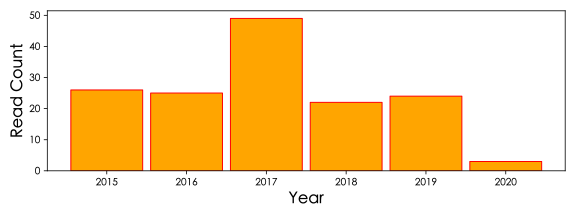
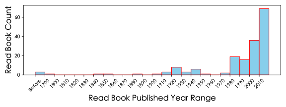

From 2014 to 2020, I've read more than books, on average books per year.
Statistics
Yearly Read Count and Book Published Age


Author
| Author | Count |
|---|
| 🇯🇵 | Haruki Murakami | 村上春树 | 10 |
| 🇯🇵 | Junichi Watanabe | 渡边淳一 | 10 |
| 🇷🇺 | Maksim Gorky | 马克西姆·高尔基 | 3 |
| 🇨🇳 | Youlan Feng | 冯友兰 | 3 |
| 🇨🇳 | Xun Lu | 鲁迅 | 3 |
| 🇩🇪 | Hermann Hesse | 赫尔曼·黑塞 | 3 |
| 🇨🇳 | - | 当年明月 | 3 |
| 🇺🇳 | Other authors | 其他作者 | 105 |
Nationality
| Nationality | Book Count |
|---|
| 🇨🇳China | 中国 | 108 |
| 🇯🇵Japan | 日本 | 28 |
| 🇬🇧UK | 英国 | 17 |
| 🇺🇸USA | 美国 | 14 |
| 🇩🇪Germany | 德国 | 5 |
| 🇷🇺Russia | 俄罗斯 | 4 |
| 🇬🇷Greece | 希腊 | 2 |
| 🇫🇷France | 法国 | 1 |
| 🇵🇰Pakistan | 巴基斯坦 | 1 |
| 🇪🇸Spain | 西班牙 | 1 |
Publisher
| Publisher | Count |
|---|
| Shanghai Translation Publishing House | 上海译文出版社 | 13 |
| People's Literature Publishing House | 人民文学出版社 | 10 |
| Publishing House of Electronics Industry | 电子工业出版社 | 6 |
| Changjiang Literature & Art Press | 长江文艺出版社 | 6 |
| Posts & Telecom Press | 人民邮电出版社 | 5 |
| Qingdao Publishing House | 青岛出版社 | 5 |
| Tsinghua University Press | 清华大学出版社 | 5 |
| Beihang University Press | 北京航天航空大学出版社 | 4 |
| Other publishers | 其他出版社 | 116 |
2020
| Title | Author(s) | Publisher | ISBN |
|---|
| 鱼姥姥语录 | [🇨🇳中] 倪萍 | 长江文艺出版社 | 9787535495723 |
| 鱼羊野史：第五卷 | [🇨🇳中] 高晓松 | 广东人民出版社 | 9787218106991 |
| 英语：第二册 | [🇨🇳中] 中小学通用教材英语编写组 | 人民教育出版社 | SH7012-071 |
| 半小时漫画宋词 | [🇨🇳中] 陈磊、半小时漫画团队 | 上海文艺出版社 | 9787532174997 |
| 山茶文具店 | [🇯🇵日] 小川糸 | 湖南文艺出版社 | 9787540485337 |
| 沉重的翅膀 | [🇨🇳中] 张洁 | 人民文学出版社 | 9787020096893 |
| 唐诗三百首 | [🇨🇳中] 张树 | 延边大学出版社 | 9787563414901 |
| 三体 | [🇨🇳中] 刘慈欣 | 重庆出版社 | 9787536692930 |
| 查泰莱夫人的情人 | [🇬🇧英] D·H·劳伦斯 | 译林出版社 | 9787544733595 |
| 明朝那些事儿：第1部 朱元璋从和尚到皇帝 | [🇨🇳中] 当年明月 | 北京联合出版公司 | 9787559601551 |
| 中国小说史略 | [🇨🇳中] 鲁迅 | 民主与建设出版社 | 9787513913386 |
2019
| Title | Author(s) | Publisher | ISBN |
|---|
| 民工团 | [🇨🇳中] 残雪 | 龙源创新数字传媒（北京）股份有限公司 | N/A |
| 六级英语真题试卷：12套超详解 | [🇨🇳中] 曾鸣，张剑，王继辉 | 世界图书出版有限公司 | 9787519250751 |
| 腾讯传 | [🇨🇳中] 吴晓波 | 浙江大学出版社 | 9787308164207 |
| 叔本华暮年之思 | [🇩🇪德] 叔本华 | 上海人民出版社 | 9787208152809 |
| 动物农场 | [🇬🇧英] 乔治·奥威尔 | 上海译文出版社 | 9787532751457 |
| 一九八四 | [🇬🇧英] 乔治·奥威尔 | 时代文艺出版社 | 9787538756036 |
| 交互界面设计 | [🇨🇳中] 陈汗青，康帆，陈莹燕 | 华中科技大学出版社 | 9787568039642 |
| 光荣与梦想：互联网口述系列丛书 许榕生篇 | [🇨🇳中] 方兴东 | 电子工业出版社 | 9787121331602 |
| 自闭症 | [🇬🇧英] 乌塔·弗里思 | 译林出版社 | 9787544775182 |
| 北宋词史 | [🇨🇳中] 陶尔夫，诸葛忆兵 | 北方文艺出版社 | 9787531732389 |
| 完全读懂AI应用最前线 | [🇯🇵日] 日经BP社 | 东方出版社 | 9787520704892 |
| 中国网络视频史 | [🇨🇳中] 陆地，靳戈 | 中国广播影视出版社 | 9787504379375 |
| 数据科学技术与应用 | [🇨🇳中] 宋晖，刘晓强 | 电子工业出版社> | 9787121346651 |
| 数据库原理与实践 | [🇨🇳中] 陆黎明，王玉善，陈军华 | 清华大学出版社 | 9787302416746 |
| 可视化数据挖掘 | [🇺🇸美] 苏克 | 电子工业出版社 | 9787505393011 |
| 游戏妖怪十日谈 | [🇨🇳中] 腾云智库，译言，木果 | 华中科技大学出版社 | 9787568041775 |
| 三张表格走天下：菜鸟也会Excel数据分析 | [🇨🇳中] 胡子平 | 电子工业出版社 | 9787121329395 |
| 数据可视化之美 | [🇺🇳] N/A | 机械工业出版社 | 9787111337966 |
| 远方的鼓声 | [🇯🇵日] 村上春树 | 上海译文出版社 | 9787532754533 |
| 当代中国社会各阶层分析 | [🇨🇳中] 朱光磊 | 天津人民出版社 | 9787201029849 |
| 这书能让你戒烟 | [🇬🇧英] 亚伦·卡尔 | 吉林文史出版社 | 9787807027577 |
| 江城 | [🇺🇸美] 彼得·海斯勒 | 上海译文出版社 | 9787532756728 |
| 指数基金投资指南 | [🇨🇳中] 银行螺丝钉 | 中信出版社 | 9787508682549 |
| 给新手的极简股票课 | [🇨🇳中] 师兄 | 中信出版集团股份有限公司 | 9787917003218 |
| 黄金时代 | [🇨🇳中] 王小波 | 长江文艺出版社 | 9787535444752 |
2018
| Title | Author(s) | Publisher | ISBN |
|---|
| 机器学习 | [🇨🇳中] 周志华 | 清华大学出版社 | 9787302423287 |
| 月食 | [🇨🇳中] 李国文 | 江苏凤凰文艺出版社 | 9787539994963 |
| 道德情操论 | [🇬🇧英] 亚当·斯密 | 中央编译出版社 | 9787802117952 |
| 半小时漫画中国史 | [🇨🇳中] 二混子 | 江苏凤凰文艺出版社 | 9787539999883 |
| 生活是很好玩的 | [🇨🇳中] 汪曾祺 | 北京时代华文书局 | 9787569915075 |
| 女神 | [🇯🇵日] 渡边淳一 | 青岛出版社 | 9787555239666 |
| 颠覆者：周鸿祎自传 | [🇨🇳中] 周鸿祎，范海涛 | 北京联合出版公司 | 9787559609304 |
| 浮岛 | [🇯🇵日] 渡边淳一 | 青岛出版社 | 9787555255918 |
| 安妮日记 | [🇩🇪德] 安妮·弗兰克 | 北方文艺出版社 | 9787531720164 |
| 中国文脉 | [🇨🇳中] 余秋雨 | 长江文艺出版社 | 9787535496249 |
| 失乐园 | [🇯🇵日] 渡边淳一 | 文化艺术出版社 | 9787503917493 |
| 全国大学生英语竞赛C类（本科生）必记核心词汇2000 | [🇨🇳中] N/A | 中国石化出版社 | 9787511446039 |
| 中国人的修养 | [🇨🇳中] 蔡元培 | 四川文艺出版社 | 9787541129964 |
| C语言程序设计 | [🇺🇸美] K·N·金 | 人民邮电出版社 | 9787115219572 |
| 全国大学生英语竞赛C类（本科生）应试指南 | [🇨🇳中] N/A | 中国石化出版社 | 9787511446022 |
| 左传故事选译 | [🇨🇳中] 左丘明 | 上海古籍出版社 | SH10186-46 |
| 黄河东流去 | [🇨🇳中] 李準 | 人民文学出版社 | 9787020049271 |
| 陕西历史 | [🇨🇳中] 陕西省教育科学研究所 | 陕西人民教育出版社 | 9787541901775 |
| 金银岛 | [🇬🇧英] 史蒂文森 | 牛津大学出版社 | 9787560014180 |
| 物联网技术与应用 | [🇨🇳中] 石志国，王志良，丁大伟 | 北京交通大学出版社 | 9787512111462 |
| 湖南人怎么了 | [🇨🇳中] 徐志频 | 中国青年出版社 | 9787515312040 |
| 肖秀荣2018考研政治命题人考点预测：背诵版 | [🇨🇳中] 肖秀荣 | 北京航天航空大学出版社 | 9787512425149 |
| 考研英语写作考前冲刺20篇 | [🇨🇳中] 何凯文 | 中国原子能出版社 | 9787502268961 |
| 考研政治真题实战 | [🇨🇳中] 时代云图产品研发中心 | 中国政法大学出版社 | 9787562073154 |
2017
| Title | Author(s) | Publisher | ISBN |
|---|
| 2018年全国硕士研究生招生考试思想政治理论考试大纲 | [🇨🇳中] 教育部考试中心 | 高等教育出版社 | 9787040480566 |
| 考研英语真题学霸狂练 | [🇨🇳中] 王继辉 | 北京航天航空大学出版社 | 9787512424630 |
| 肖秀荣2018考研政治命题人终极预测4套卷 | [🇨🇳中] 肖秀荣 | 北京航天航空大学出版社 | 9787512425736 |
| 肖秀荣考研书系列:肖秀荣考研政治命题人冲刺8套卷 | [🇨🇳中] 肖秀荣 | 北京航天航空大学出版社 | 9787512425156 |
| 文都教育·考研英语阅读思路解析 | [🇨🇳中] 何凯文 | 中国原子能出版社 | 9787502278748 |
| 米脂的婆姨绥德的汉 | [🇨🇳中] 霍林楠 | 宁夏人民出版社 | 9787227035985 |
| 乡愁 | [🇩🇪德] 赫尔曼·黑塞 | 上海三联书店 | 9787542638946 |
| 走婚 | [🇨🇳中] 宋兆麟 | 西苑出版社 | 9787801089199 |
| 命题人考研英语阅读理解基础过关60篇 | [🇨🇳中] N/A | 西安交通大学出版社 | 9787560578590 |
| 为什么读书：胡适演讲集（三 | [🇨🇳中] 胡适 | 北京大学出版社 | 9787301221976 |
| 中国官僚政治研究 | [🇨🇳中] 王亚南 | 商务印书馆 | 9787100129114 |
| 网页美术设计原理及实战策略 | [🇨🇳中] 张亚敏 | 清华大学出版社 | 9787302439288 |
| 仁医 | [🇯🇵日] 渡边淳一 | 青岛出版社 | 9787555247104 |
| 前端架构设计：让前端开发可持续优化、可扩展 | [🇺🇸美] 弥伽·Godbolt | 人民邮电出版社 | 9787115452368 |
| 钟鼓楼 | [🇨🇳中] 刘心武 | 长江文艺出版社 | 9787535472342 |
| 网络流行语的生产与扩散机制研究 | [🇨🇳中] 蒋秀玲 | 中山大学出版社 | |
| 习近平关于社会主义经济建设论述摘编 | [🇨🇳中] 中共中央文献研究室 | 中央文献出版社 | 9787507338126 |
| 漂泊的灵魂 | [🇩🇪德] 赫尔曼·黑塞 | 上海三联书店 | 9787542638908 |
| 电子游戏设计概论 | [🇨🇳中] 张健翔，周红亚，钟远波 | 海洋出版社 | 9787502795856 |
| 海盗派测试分析：MFQ&PPDCS | [🇨🇳中] 邰晓梅 | 人民邮电出版社 | 9787115444158 |
| 悉达多 | [🇩🇪德] 赫尔曼·黑塞 | 人民文学出版社 | 9787020112333 |
| 精通jQuery Web开发（第2版） | [🇺🇸美] 理查德·约克 | 清华大学出版社 | 9787302419723 |
| 大数据侦查 | [🇨🇳中] 王燃 | 清华大学出版社 | 9787302455516 |
| jQuery实战（第三版） | [🇺🇸美] B·Bibeault，Y·Katz，A·de·Rosa | 华中科技大学出版社 | 9787568020350 |
| 游戏特效设计 | [🇨🇳中] 霍继斌，孟祥禹 | 化学工业出版社 | 9787122268655 |
| Web应变之道 | [🇺🇸美] Rob Larsen | 电子工业出版社 | 9787121277696 |
| 网络综合布线设计及施工技术探究 | [🇨🇳中] 郭红涛 | 中国水利水电出版社 | 9787517034377 |
| 影绘：某少年爱与性的物语 | [🇯🇵日] 渡边淳一 | 青岛出版社 | 9787555236580 |
| 隋唐人的日常生活 | [🇨🇳中] 于赓哲 | 陕西人民教育出版社 | 9787545039467 |
| 钝感力 | [🇯🇵日] 渡边淳一 | 南海出版社 | 9787544266482 |
| 对话移动互联网 | [🇨🇳中] 中兴通讯学院 | 人民邮电出版社 | 9787115230027 |
| 我是马拉拉 | [巴基斯坦] 马拉拉 | 四川人民出版社 | 9787220091742 |
| 考研英语写作高分攻略 | [🇨🇳中] 何凯文 | 中国原子能出版社 | 9787502278724 |
| 互联网新物种新逻辑 | [🇨🇳中] 陆新之，潘浩 | 西南财经大学出版社 | 9787550426962 |
| 我永远的家 | [🇯🇵日] 渡边淳一 | 青岛出版社 | 9787555217404 |
| 冬天里的春天 | [🇨🇳中] 李国文 | 作家出版社 | 9787506348300 |
| 苹果APP界面设计，你该知道的大小事 | [🇺🇸美] 戴夫·布朗 | 电子工业出版社 | 9787121280306 |
| 胡适四十自述 | [🇨🇳中] 胡适 | 华文出版社 | 9787507538373 |
| 中国古代史常识（隋唐五代宋元部分） | [🇨🇳中] N/A | 中国青年出版社 | SH11009-87 |
| 芙蓉镇 | [🇨🇳中] 古华 | 人民文学出版社 | 9787020063390 |
| 呐喊·彷徨 | [🇨🇳中] 鲁迅 | 北京时代华文书局 | 9787569912500 |
| 中学古诗文注译析 | [🇨🇳中] 张斐成，江一鹭，夏初 | 广西人民出版社 | SH7113-752 |
| 李自成：第二卷 商洛壮歌 | [🇨🇳中] 姚雪垠 | | 9787020096800 |
| 风之影 | [🇪🇸西] 卡洛斯·鲁依斯·萨丰 | 人民文学出版社 | 9787020077076 |
| 将军吟 | [🇨🇳中] 莫应丰 | 人民文学出版社 | 9787020048854 |
| 东方 | [🇨🇳中] 魏巍 | 中国文学出版社 | SH10019-2673 |
| 龙珠 | [🇯🇵日] 鸟山明 | 中国少年儿童出版社 | 9787600100354 |
| 季羡林自传 | [🇨🇳中] 季羡林 | 当代中国出版社 | 9787515405353 |
| 唐代绝句赏析 | [🇨🇳中] 刘学锴，赵其钧，周啸天 | 安徽人民出版社 | SH10102-871 |
2016
| Title | Author(s) | Publisher | ISBN |
|---|
| 英文散文一百篇 | [🇨🇳中] 高健 | 中国对外翻译出版公司 | 9787500105275 |
| 那时的大学 | [🇨🇳中] 冯友兰，季羡林，梁实秋 等 | 国际文化出版公司 | 9787512508033 |
| 文化苦旅 | [🇨🇳中] 余秋雨 | 长江文艺出版社 | 9787535447340 |
| 滚蛋吧!肿瘤君 | [🇨🇳中] 熊顿 | 北京理工大学出版社 | 9787568208109 |
| 许茂和他的女儿们 | [🇨🇳中] 周克芹 | 人民文学出版社 | 9787020049349 |
| 你今天真好看 | [🇺🇸美] 莉兹·克里莫 | 天津人民出版社 | 9787201094359 |
| 我不是潘金莲 | [🇨🇳中] 刘震云 | 长江文艺出版社 | 9787535449481 |
| 爱的流放地 | [🇯🇵日] 渡边淳一 | 文化艺术出版社 | 9787503933059 |
| 理想国 | [🇬🇷希] 柏拉图 | 九州出版社 | 9787801955685 |
| 时间简史 | [🇬🇧英] 史蒂芬·霍金 | 湖南科学技术出版社 | 9787535732309 |
| 酒国 | [🇨🇳中] 莫言 | 上海文艺出版社 | 9787532146307 |
| 欲情课 | [🇯🇵日] 渡边淳一 | 九州出版社 | 9787510831423 |
| 绝对小孩 | [🇨🇳中] 朱德庸 | 上海锦绣文章出版社 | 9787806857496 |
| 魔兽世界诞生记 | [🇨🇳中]楚云帆 | 中信出版社 | 9787893990427 |
| 简爱 | [🇬🇧英] 夏洛蒂·勃朗特 | 译林出版社 | 9787544716512 |
| 男人这东西 | [🇯🇵日] 渡边淳一 | 九州出版社 | 9787510831416 |
| 文笔精华：名家笔下的人 | [🇨🇳中] N/A | 广西人民出版社 | SH7113-402 |
| 中国哲学小史 | [🇨🇳中] 冯友兰 | 当代中国出版社 | 9787515403472 |
| 中国哲学简史 | [🇨🇳中] 冯友兰 | 新世界出版社 | 9787801872166 |
| 故事新编 | [🇨🇳中] 鲁迅，裘沙，王伟君 | 漓江出版社 | 9787540725259 |
| 朝花夕拾 | [🇨🇳中] 鲁迅 | 人民文学出版社 | SH10019-1985 |
| 理想国 | [🇬🇷希] 柏拉图 | 商务印书馆 | 9787100017565 |
| 1973年的弹子球 | [🇯🇵日] 村上春树 | 上海译文出版社 | 9787532745975 |
| 乖，摸摸头 | [🇨🇳中] 大冰 | 湖南文艺出版社 | 9787540468798 |
| 活着 | [🇨🇳中] 余华 | 作家出版社 | 9787506365437 |
| 朱自清散文 | [🇨🇳中] 朱自清 | 人民文学出版社 | 9787020098842 |
2015
| Title | Author(s) | Publisher | ISBN |
|---|
| 1988：我想和这个世界谈谈 | [🇨🇳中] 韩寒 | 国际文化出版公司 | 9787512500983 |
| 明朝那些事儿（贰） | [🇨🇳中] 当年明月 | 中国友谊出版公司 | 9787505722859 |
| 崩溃边缘的世界 | [🇺🇸美] 莱斯特·R·布朗 | 上海科技教育出版社 | 9787542853080 |
| 追风筝的人 | [🇺🇸美] 卡勒德·胡赛尼 | 上海人民出版社 | 9787208061644 |
| 大学生必读名著 | [🇨🇳中] 崔海英 | 上海辞书出版社 | 9787532633265 |
| 明朝那些事儿（壹） | [🇨🇳中] 当年明月 | 中国友谊出版公司 | 9787505722460 |
| 射雕英雄传 | [🇨🇳中] 金庸 | 生活·读书·新知三联书店 | 9787108006714 |
| 我所爱的香港 | [🇨🇳中] 林夕 | 广西师范大学出版社 | 9787563385416 |
| 从一到无穷大：科学中的事实与臆测 | [🇺🇸美] 乔治·伽莫夫 | 科学出版社 | 9787030107596 |
| 泰坦尼克号上的“中国佬”：种族主义想象力 | [🇨🇳中] 程巍 | 漓江出版社 | 9787540766610 |
| 漫步奇妙的宇宙 | [🇨🇳中] 赵莹 | 中国戏剧出版社 | 9787104021278 |
| 拿铁，还是卡布奇诺：1天24小时的120个正确选择 | [🇬🇧英] 希利·简斯 | 人民邮电出版社 | 9787115337986 |
| 中国西北美食之旅 | [🇨🇳中] N/A | 上海文化出版社 | 9787553500898 |
| 群山回唱 | [🇺🇸美] 卡勒德·胡赛尼 | 上海人民出版社 | 9787208115132 |
| 西方历史学名著提要 | [🇨🇳中] 陈启能 | 江西人民出版社 | 9787210023890 |
| 用洗脸盆吃羊肉饭 | [🇯🇵日] 石田裕辅 | 上海译文出版社 | 9787532751525 |
| 巴黎女人为什么最时尚 | [🇫🇷法] 凯伦·霍莫 | 吉林文史出版社 | 9787807023753 |
| 被禁止的知识：天才学者揭露科学与灵性终极奥秘的大胆对话 | [🇺🇸美] 帕特丽夏·科莉 | 江苏文艺出版社 | 9787539959139 |
| 马桶的历史：管子工如何拯救文明 | [🇺🇸美] 霍丁·马特 | 上海译文出版社 | 9787532746613 |
| 大拙至美：梁思成最美的文字建筑 | [🇨🇳中] 林洙，梁思成 | 中国青年出版社 | 9787500679523 |
| 挪威的森林 | [🇯🇵日] 村上春树 | 上海译文出版社 | 9787532742929 |
| 旋转木马鏖战记 | [🇯🇵日] 村上春树 | 上海译文出版社 | 9787532748501 |
| 电视人 | [🇯🇵日] 村上春树 | 上海译文出版社 | 9787532748464 |
| 老张的哲学 | [🇨🇳中] 老舍 | 文汇出版社 | 9787807414445 |
| 对中国文化的乡愁 | [🇯🇵日] 青木正儿，吉川幸次郎 | 复旦大学出版社 | 9787309044386 |
| 我的大学 | [🇷🇺俄] 马克西姆·高尔基 | 广州出版社 | 9787807313625 |
2014
| Title | Author(s) | Publisher | ISBN |
|---|
| 骆驼祥子·月牙儿 | [🇨🇳中] 老舍 | 天津人民出版社 | 9787201059730 |
| 列克星敦的幽灵 | [🇯🇵日] 村上春树 | 上海译文出版社 | 9787532748488 |
| 中国游记 | [🇯🇵日] 芥川龙之介 | 北京十月文艺出版社 | 9787530208243 |
| 取景中国 | [🇨🇳中] 王淑敏 | N/A | 9787545204223 |
| 村上朝日堂是如何锻造的 | [🇯🇵日] 村上春树 | 上海译文出版社 | 9787532752287 |
| 在人间 | [🇷🇺俄] 马克西姆·高尔基 | 广州出版社 | 9787807313601 |
| 童年 | [🇷🇺俄] 马克西姆·高尔基 | 广州出版社 | 9787807313618 |
| 没有色彩的多崎作和他的巡礼之年 | [🇯🇵日] 村上春树 | 南海出版公司 | 9787544268417 |
| 旋涡猫的找法 | [🇯🇵日] 村上春树 | 上海译文出版社 | 9787532752270 |
| 如果我们的语言是威士忌 | [🇯🇵日] 村上春树 | 上海译文出版社 | 9787532763238 |
| 别怕！在外企说英语其实很简单 | [🇯🇵日] 高田诚 | 世界图书出版公司 | 9787510067808 |